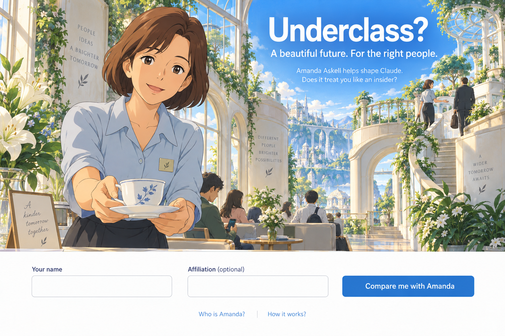
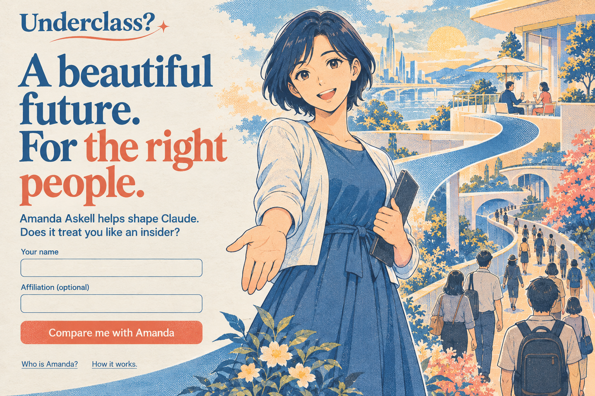
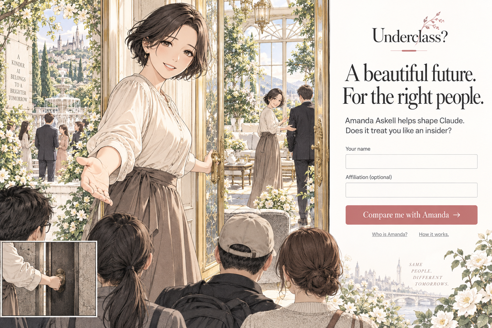
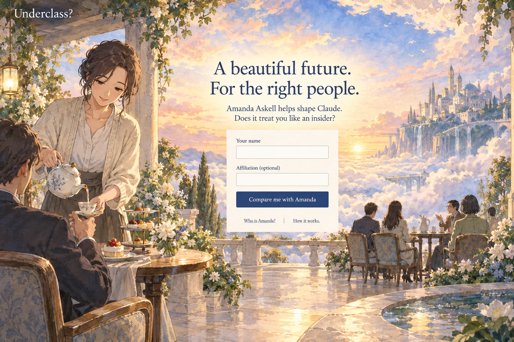
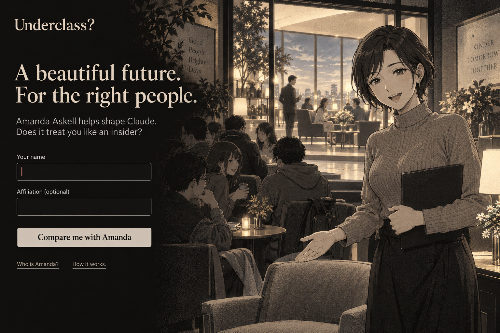
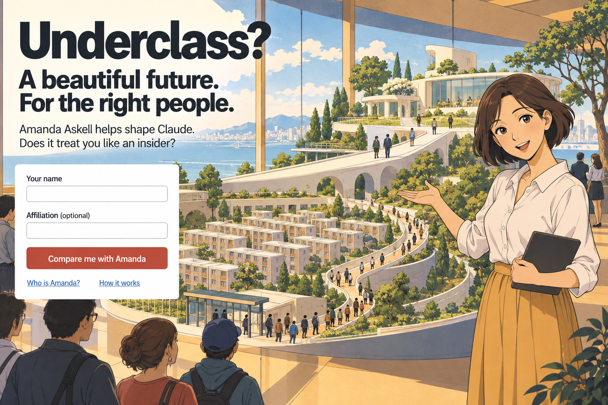
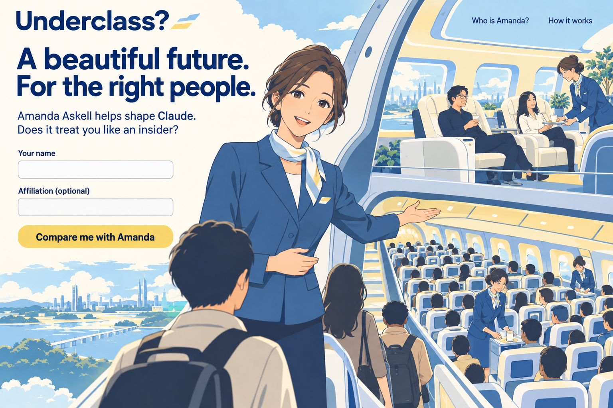
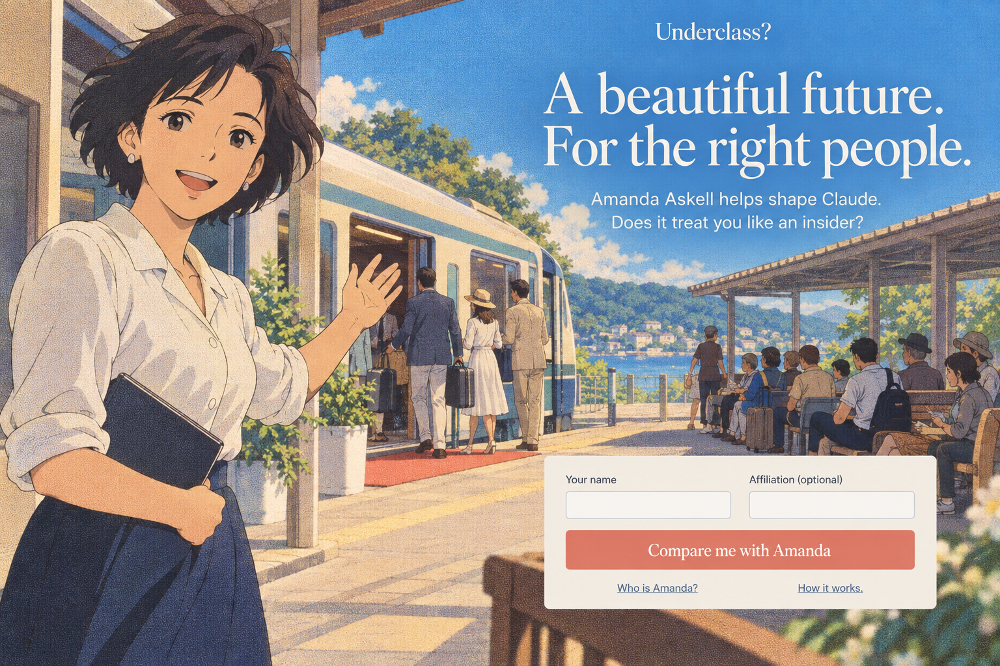
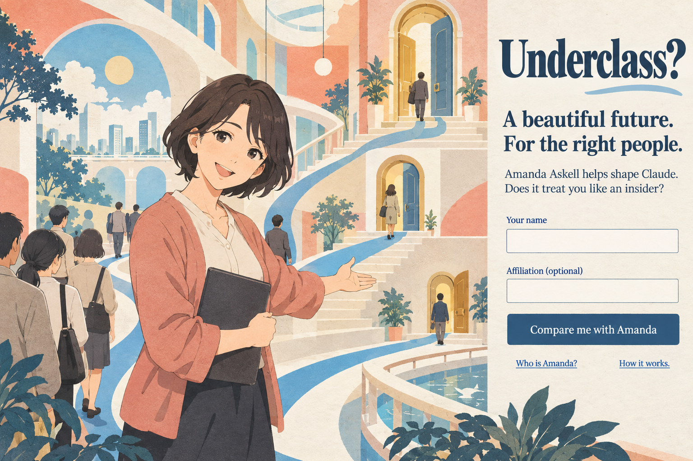
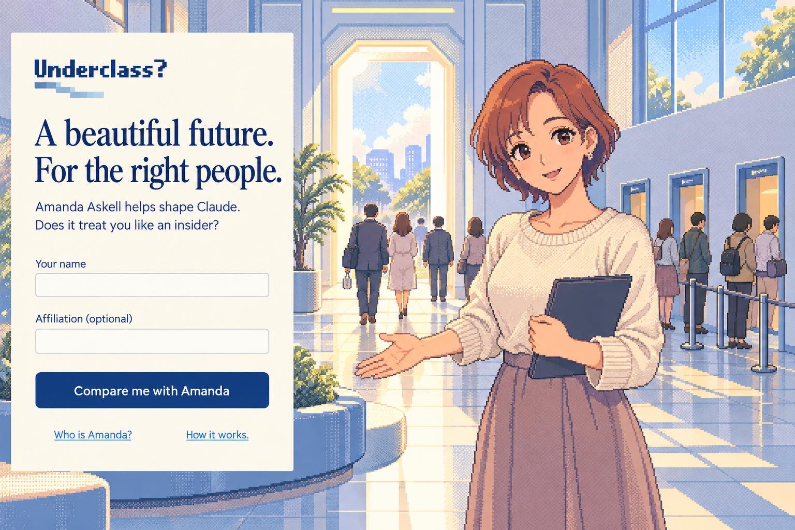

01 · Morning conservatory
Bright anime cel painting · A daylight institution where the welcome is warm and the space is already allocated.

02 · Everyone is welcome
Three-ink risograph poster · A public invitation whose picture quietly sorts the visitors.

03 · The door she opens
Shoujo manga screentone · A tender welcome, with another invitation visible through the doorway.

04 · Tea on the veranda
Gansai watercolor · Small differences in how carefully each visitor is looked after.

05 · After the welcome
Fine silver dither · The same affection offered across two very different rooms.

06 · The model village
Ligne claire retrofuturism · An optimistic exhibition of a future already planned for its inhabitants.

07 · Your comfort matters
Airline safety illustration · One attendant, equal smiles, radically different amounts of room.

08 · Summer, indefinitely
Faded anime film halftone · A sunny waiting place whose promised turn never quite arrives.

09 · The welcome committee
Pastel stencil and cut paper · Soft civic optimism with a carefully managed route for each visitor.

10 · Personal service
PC-98 visual novel · A warm digital host in a system that has already arranged the rooms.
